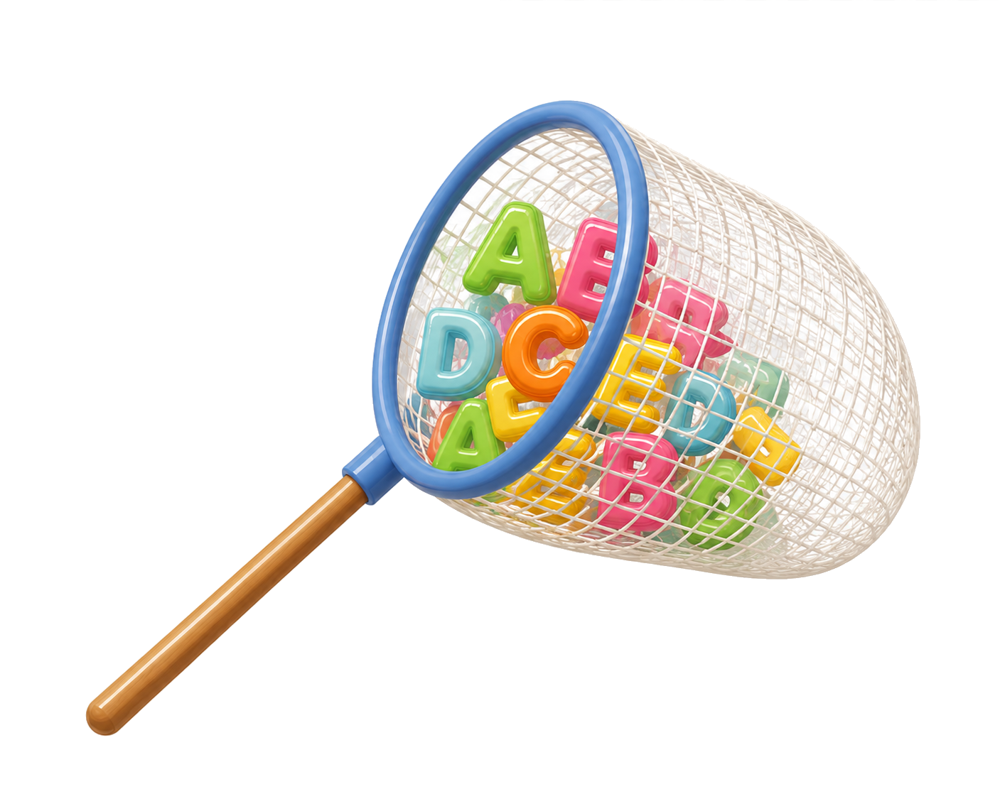
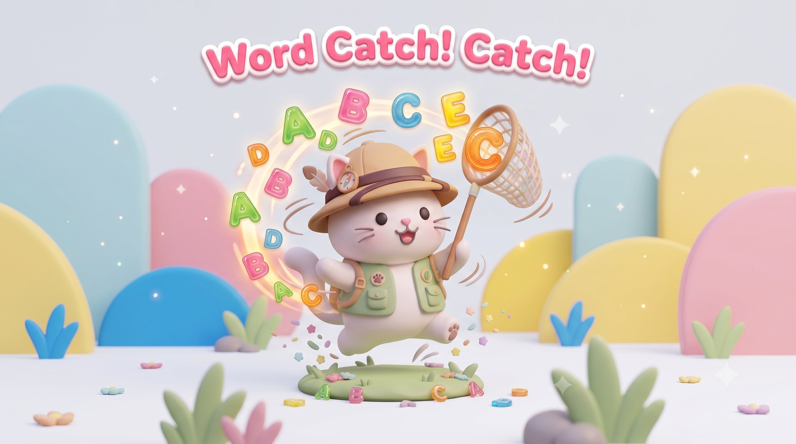

화면을 가로로 돌려 주세요
가로로 놓으면 알파벳 퍼즐 판이 커져서
훨씬 편하게 할 수 있어요.
이대로 할래요
Round Clear!

Next Round!

How to Play
Game Start
How to Play
학습목표: 퍼즐 속에 숨겨진 영어 단어를 찾아보며 재미있게 어휘력과 집중력을 키워요!
Game Start
를 누르면 이번 단원의 단어로 게임이 시작됩니다.
총
4분
의 시간이 주어지며 게임이 시작되면 시간이 줄어듭니다.
Word Box
에 제시된 단어들을 알파벳 퍼즐 판에서 찾습니다.
가로, 세로, 대각선(왼쪽 위→오른쪽 아래)
방향으로 숨겨진 단어를 찾아 철자를 순서대로 클릭합니다.
정답 시
'+20초'
, 오답 시
'-10초'
, 힌트 사용 시
'-20초'
제한 시간 내에 각 라운드의 모든 단어를 찾아내면 다음 라운드로 진출합니다.
총
3라운드
까지의 모든 단어를 완벽하게 찾아내면
최종 미션 성공!
닫기
Game Start
학년을 선택하세요.
단원을 선택하세요.
Word Catch! Catch!
ROUND
1
/ 3
Hint
4:00
Word Box
게임을 종료할까요?
지금 나가면 풀던 문제가 사라져요.
나가기
계속하기